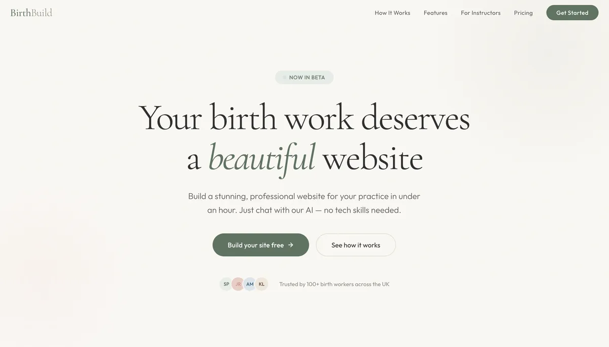
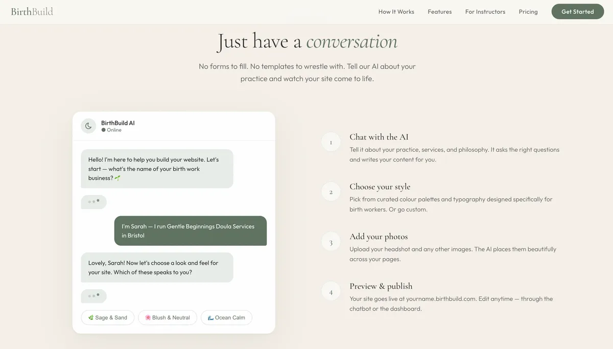
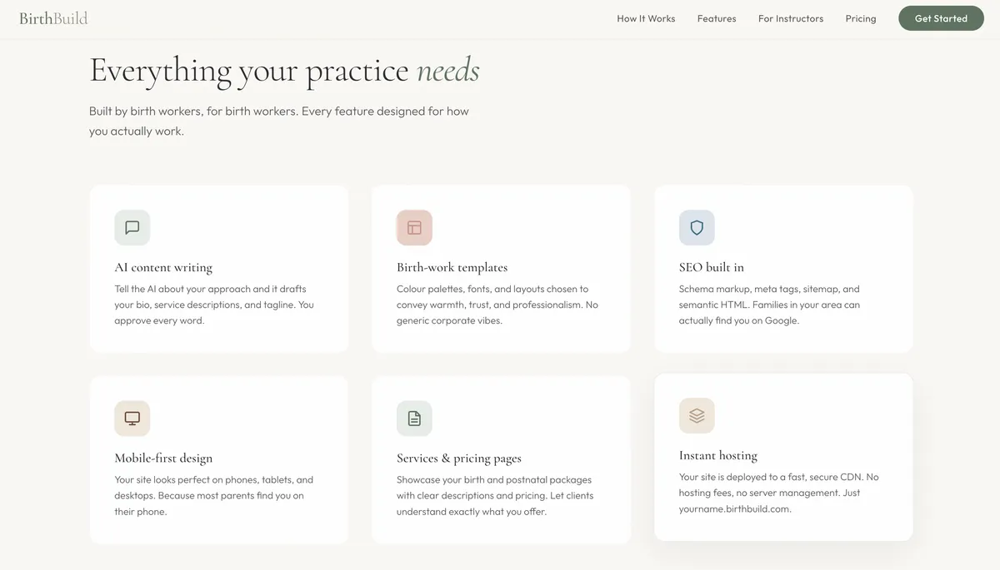
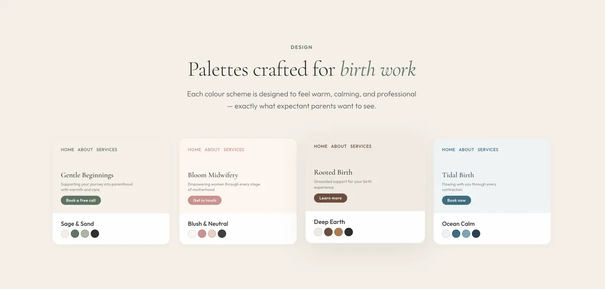

The problem
Birth workers — doulas, hypnobirthing practitioners, antenatal educators — need professional websites but typically aren't technical. They graduate from training courses and immediately face the blank-page problem: how do I present myself online?
The options are bad. Squarespace means wrestling with a drag-and-drop editor that still requires design decisions. Hiring a developer costs thousands. Doing nothing means relying on Instagram and word of mouth. None of these serve someone who's good at supporting families through birth but has no interest in web development.
The solution
BirthBuild eliminates the blank page entirely. A guided AI chatbot has a conversation with the birth worker — asking about their business name, services, philosophy, testimonials, and design preferences. That conversation produces a structured site specification. That specification feeds an LLM that generates a polished, deployed website on a custom subdomain. No code. No design decisions. Just a conversation.

The chatbot onboarding is the key innovation. It's not a form. It's a conversation that elicits specificity. A doula who says "I specialise in home births for second-time parents in South Bristol" gets a dramatically more personal site than one who says "I'm a doula in Bristol." The chatbot's job is to draw out those details.

The architecture
Frontend: React 18 with Vite, Tailwind CSS. Single-page app with protected routing and magic link auth via Supabase.
Backend: Supabase Postgres with row-level security on every table. Four Edge Functions handle the Claude API proxy, site generation, Netlify deployment, and instructor invites. API keys never touch the client.
Build pipeline: Two paths. A template build for instant previews (deterministic, client-side HTML generation) and an LLM build for production sites (AI-generated pages via Edge Functions). The LLM path runs: generate design system → generate pages in parallel → save checkpoint → deploy to Netlify.
Multi-tenancy: Instructors create workshop sessions and invite students via magic link. Each student builds their own site. The instructor dashboard shows progress, previews specs, and tracks usage. Every database query is scoped by tenant ID. RLS enforces isolation.

Checkpoint system: Versioned HTML snapshots stored in the database. Section markers (<!-- bb-section:name -->) enable deterministic editing without re-running the LLM. A retention trigger prunes to the last 10 per site.

What shipped
- Magic link authentication (no passwords)
- 7-step AI chatbot onboarding with tool calling
- Full dashboard form editor (7 tabs, 22 components)
- AI content generation (bios, taglines, FAQs)
- 4 curated colour palettes designed for birth work
- Photo upload to Supabase Storage
- Static site build pipeline with Netlify Deploy API
- Subdomain provisioning
- Instructor admin with session CRUD and bulk invites
- WCAG accessibility compliance
- 20 security findings identified and fixed
What went wrong
Three infrastructure issues hit during the build. The Supabase MCP integration failed silently — MAI was writing schema and RLS policies without being able to verify them against the actual database. Puppeteer failed silently too, eliminating automated browser testing. And the tri-model adversarial review never ran because the OpenAI key wasn't configured.
The result: the database layer was a mess. Ninety minutes of debugging traced frontend issues back to schema and RLS problems that the adversarial review would have caught. The lesson for the next MAI iteration is clear: silent failures need to become loud failures. A pre-flight check would have saved those ninety minutes.
What's next
The horizontal platform beneath BirthBuild is the real product. The same engine can power physiotherapistbuild.com, therapistbuild.com, or any practitioner vertical. Swap the prompts, adjust the onboarding flow, and you have a new product. The instructor licensing model turns training providers into distribution channels — every graduating cohort needs a website, and the tool is already familiar.